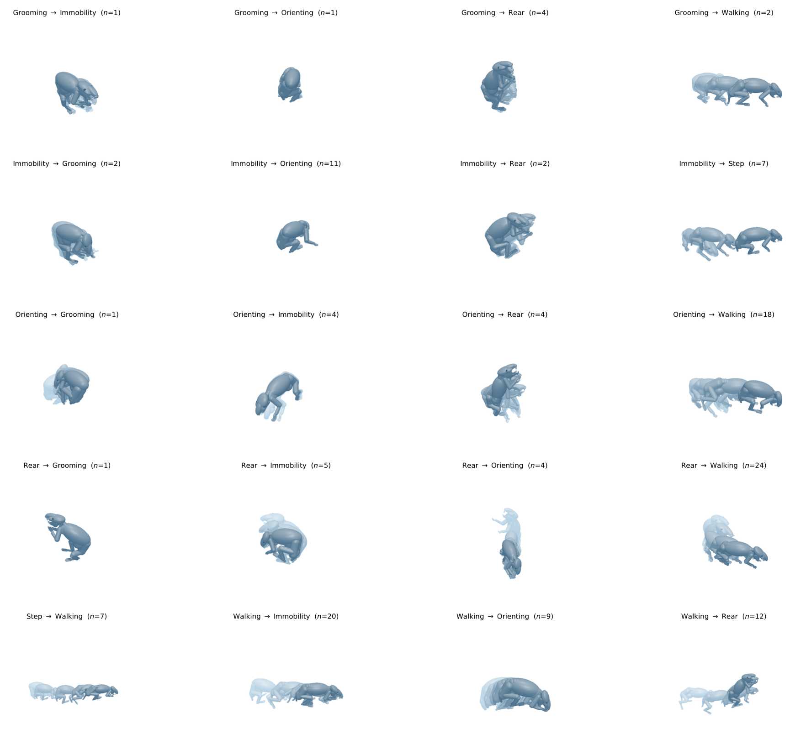

Understanding how animals transition between behavioral modes is fundamental to neuroscience and motor control. Current approaches either segment behaviors into discrete states or project onto low-dimensional embeddings, but neither explicitly models the geometric structure of transitions themselves. We present a manifold learning method for behavioral transition discovery via topologically invariant simplification. Using discrete Morse theory on density-weighted point clouds, we extract the topological skeleton of the behavioral manifold — a sparse graph that retains only the frames algebraically forced by the data's topology while discarding everything else. The skeleton is shaped by what is absent: low-density ridges between behavioral basins create topological obstructions that the simplification must preserve.
Our framework operates at two tiers: DM-paths (H0) identify transition corridors between persistent density basins, while DM-cycles (H1) reveal asymmetric motor programs when additional geometric conditions hold. We show that behavioral transitions force the skeleton to contain saddle-crossing paths, and that drift-invariant representations are necessary for cycle closure. Empirically, behaviorally rich clips retain many skeleton frames at transition points while stationary clips compress to near-zero, validating the weak Morse inequality. The resulting algorithm, Discrete-Morse Wasserstein K-Means Clustering (DM-WKC), uses these topological primitives as manifold coordinates compared via Wasserstein distance to discover transition types without supervision. On rodent and walker datasets across three feature spaces (egocentric keypoints, joint configurations, learned intentions), DM-WKC discovers 2–3× more transition types than state-space baselines with better ground-truth alignment, higher internal consistency, and greater temporal coherence, while the topological primitives act as compressed representations that baseline methods fail to achieve.

Behavioral transition types discovered by DM-WKC across rodent behaviors (grooming, immobility, orienting, rear, walking, step), with sample counts shown for each transition pair.
I am working on this with advising from professor Yusu Wang and professor Talmo Pereira. This work is currently under submission. TopoMIMIC was presented at the Annual Society for Neuroscience (SfN) 2025 Conference with this poster.